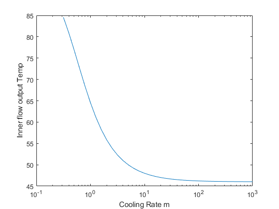

Contents
clc;clf,clearvars;
format long

Q3 Part d Plot semilogx plot
T12_list = [];
m_list= [];
for i = -0.5:0.1:3
m = 1;
m = m*(10^i);
m_list = [m_list m];
T = Tchanger2(m);
T12_list = [T12_list T];
end
semilogx(m_list,T12_list)
xlabel('Cooling Rate m');
ylabel('Inner flow output Temp');
警告: 复数 X 和/或 Y 参数的虚部已忽略。

Q3 Part c Newton's Method
Tchanger2(5)
function T = Tchanger2(m)
T11 = 100;
T22 = 15;
A = 6.957047792;
U = 1;
m1 = 3;
Cp1 = 2.3;
Cp2 = 4;
getf = @(T) m1*Cp1*(T-T11) - U*A*(((T22-T)-((((m1*Cp1*(T11-T))/...
(m*Cp2))+T22)-T11))/log((T22-T)/((((m1*Cp1*(T11-T))/(m*Cp2))+T22)-T11)));
d_getf = @(T) 6.9-(6.957*(m - 1.725)*(T - 100)*...
(m - 2.30393*10^(-18)*T - 1.725))/(m*(T - 15)*...
(m + 0.0202941*T - 2.02941)*((log((m*(0.0117647*T - 0.176471))/...
(m + 0.0202941*T - 2.02941))))^(2))+((6.957*m - 12.0008)/(m*log((m*...
(0.0117647*T - 0.176471))/(m + 0.0202941*T - 2.02941))));
T = 1000;
tol = 10^(-6);
iter = 0;
iter_max = 100;
f = getf(T);
while abs(f) > tol
df = d_getf(T);
T = T-f/df;
iter = iter + 1;
f = getf(T);
if iter > iter_max
fprintf('Did not converge')
break
end
end
end
ans =
50.002597816554506